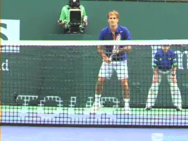
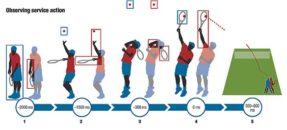
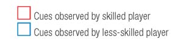
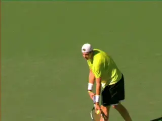
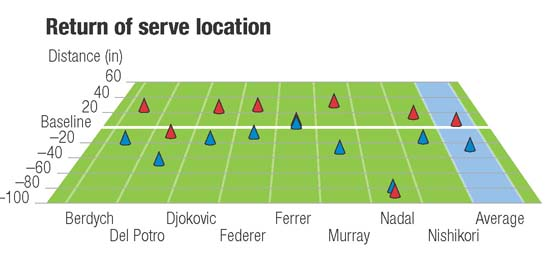
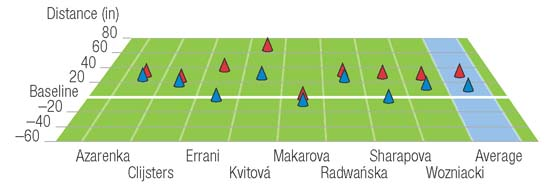
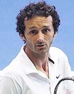

Anticipating the serve¶
Anticipating the Serve
Machar Reid, Miguel Crespo, Damian Farrow

Video demonstration — the original video for this article was hosted on TennisPlayer.net.
What strategies do great returners use to anticipate a 125mph serve?
Many elite players, particularly in the men's game, are able to direct serves in excess of 125 mph to all parts of the service box. This presents a considerable challenge to their opponents, standing some 78 feet away, who have approximately one third of a second between the hit and the ball bounce to assess the ball's flight and begin a well-timed return.
The battle between the server and returner has attracted the interest of researchers for more than 20 years. Various researchers have focused on what information or cues returners can use in that third of a second of ball flight---as well as the split seconds prior to the hit --to help determine the serve's likely direction, allowing for an improved motor response.
Skilled players have been shown to use two forms of advance information. First, situational probability information, such as strategic insights based on known preferences of the server. Second the mechanics of the service action.
Situational Probability
Situational probability means that skilled players are sensitive to tactical patterns that occur and reoccur throughout a match. Awareness of these specific event probabilities buys the returners additional time to prepare a response.


Highly skilled players access information to help predict serve location from the movement of the server's racket and arm (red boxes) with the 300 milliseconds before impact up until impact particularly informative. On the other hand, less-skilled players almost exclusively track the ball toss (blue boxes) and have no systematic search pattern, so assume less favorable positions to return the ball.
In an attempt to analyze this phenomenon, researchers presented skilled and less-skilled tennis players with video sequences of a simulated match where the direction and type of serve in the first point of each game were controlled. The serve on the first point was always to the "T" in the deuce court.
The serve direction of all other points was randomly assigned. Skilled players picked up this cue by the end of the first set, while less-skilled players were unable to detect it at all.

Studying the server's biomechanics can help the returner gain 300 milliseconds.
Bio-Mechanical Elements
The biomechanical elements of the server's action are also thought to provide anticipatory information that has been shown to help skilled players accurately predict service direction some 300 milliseconds before the ball is struck.
With so little time available to respond to the serve, players need to extract every bit of information that they can to most effectively return serve. Highly skilled players can generally interpret where the ball is going to be hit based on the mechanics of their opponent's service action.
These players pick up cues well before the racket meets the ball, providing them with more time to plan their serve return. The location or height of the ball toss and the angle of the racket during its forward swing to impact seem to provide the most information.
In contrast, less skilled players are reliant on ball flight information and consequently are left with little time to prepare an appropriate response, resulting in being "aced" or, at best, making a rushed return.
Positioning
Often players will also do something as simple as adjusting their position on return to buy themselves more time to perceive and respond. In the graphic, with the distance in inches, we see the average return of serve position on both first and second serves of 16 of the game's best male and female players during a recent Australian Open tournament.


The charts show return positions of the game's best players on first and second serves, measured in inches relative to the baseline.

Machar Reid is the innovation catalyst at Tennis Australia. He established the Sports Science and Medicine Unit there in 2008. He is the coauthor of several books on tennis sports science and coaching.
Damian Farrow holds a joint appointment within the College of Sport & Exercise Science, and the Australian Institute of Sport, where he responsible for research and support of coaches seeking to develop the skills of Australian athletes. A former tennis coach and physical education teacher, he has worked with Cricket Australia, Tennis Australia, Netball Australia, Surfing Australia, the Australian Rugby Union and Swimming Australia.

Miguel Crespo is the research officer at the International Tennis Federation Development Department, Spain. He oversees the ITF's coach education program and has coauthored and edited many ITF publications.